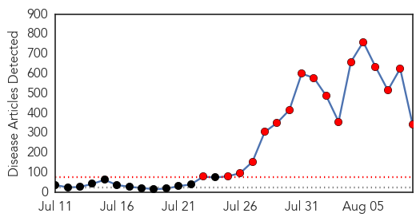
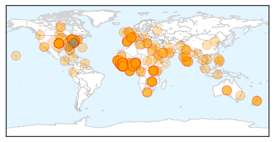
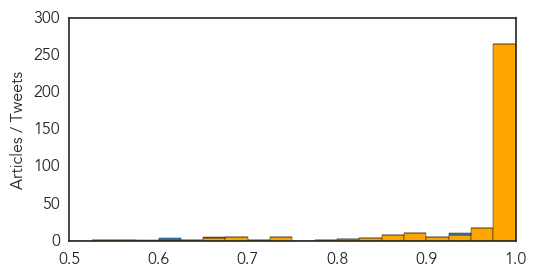

West Nile Virus
30-Day Web Trend
2 alerts, 0 warnings

30-Day Twitter Trend
0 alerts, 0 warnings

Article Locations

Article Confidences

Top Articles:
- 0.994
- Second Louisiana resident dies from West Nile virus; 14 new cases reported
- 0.979
- First Cases Of Human West Nile Virus In Pennsylvania And New Jersey; Higher Than Normal Amount Of Mosquitoes Testing Positive For Virus « CBS Philly
- 0.965
- Hawk is second dead bird in San Diego County with West Nile virus
- 0.894
- Pa. and N.J. report season's first West Nile cases
Top Tweets:
-
No tweets found for Aug 09, 2014
Ebola
30-Day Web Trend
17 alerts, 0 warnings

30-Day Twitter Trend
13 alerts, 0 warnings
Article Locations
Article Confidences
Top Articles:
- 1.000
- Ebola: Risky myths and rumours
- 1.000
- UN calls Ebola outbreak public health emergency
- 1.000
- Liberian president apologizes to Ebola healthcare workers
- 1.000
- WHO calls Ebola outbreak an international health emergency
- 1.000
- Nigeria calls for volunteers to fight Ebola virus
- 1.000
- WHO: Ebola outbreak is a public health emergency
- 1.000
- WHO declares Ebola epidemic in West Africa a health emergency
- 1.000
- What’s scary about Ebola, reasons not to fear it
- 1.000
- WHO: Ebola outbreak is a public health emergency
- 1.000
- uinea closes border with Sierra Leone and Liberia over Ebola fears
- 1.000
- Ebola Terrifying But Controllable, Say Experts
- 1.000
- Few, if any, treatments exist for many contagious diseases
- 1.000
- Ebola victim pens note of his life
- 1.000
- UN declares Ebola outbreak world emergency
- 1.000
- uinea closes border with Sierra Leone and Liberia over Ebola fears
- 1.000
- Patient isolated with Ebola-like symptoms
- 1.000
- Ebola is scary, but here are the reasons you shouldn't fear it
- 1.000
- World Health Organisation declares Ebola epidemic a global emergency
- 1.000
- Nations urged to donate cash and resources to fight Ebola virus
- 1.000
- Patient at Ontario hospital with Ebola-like symptoms, but no diagnosis yet
- 1.000
- Man who visited Nigeria now in isolation at Brampton hospital with flu-like symptoms
- 1.000
- uinea closes border with Sierra Leone and Liberia over Ebola fears
- 1.000
- Ebola-hit W Africa nations shut borders
- 1.000
- Guinea Closes Borders in Bid to Stop Ebola Virus from Spreading
- 1.000
- Nigeria asks for volunteers to halt Ebola spread
- 1.000
- WHO declares Ebola epidemic a global emergency
- 1.000
- Ebola in Canada? Patient returning from virus-stricken West Africa is being tested for the disease
- 1.000
- Ontario hospital investigating patient with flu-like symptoms
- 1.000
- Ebola concerns: Winnipeg lab testing Brampton, Ont. man's blood
- 1.000
- Liberian president apologizes to Ebola healthcare workers
- 1.000
- Ebola outbreak: High death toll among health worker 1st responders
- 1.000
- Ebola outbreak: High death toll among health worker 1st responders
- 1.000
- Person who visited Nigeria taken to Brampton hospital with flu-like symptoms
- 1.000
- Ebola outbreak declared an international public health emergency
- 1.000
- WHO declares Ebola in West Africa a health emergency
- 1.000
- Ebola on Track to Infect More People Than Previous Outbreaks
- 1.000
- UN: Ebola outbreak a public health emergency
- 1.000
- Ebola on Track to Infect More People Than Previous Outbreaks
- 1.000
- WHO declares Ebola epidemic in West Africa a health emergency
- 1.000
- WHO declares Ebola epidemic in West Africa a health emergency
- 1.000
- WHO: Ebola outbreak in West Africa an international health emergency
- 1.000
- Liberia president apologises for high toll for Ebola health workers
- 1.000
- Liberia president apologises for high toll for Ebola health workers
- 1.000
- Liberia president apologises for high toll for Ebola health workers
- 1.000
- Patient with Ebola-like symptoms alarms Canada as UK develops new vaccine — RT News
- 1.000
- Update On Patient Being Tested For Ebola Virus Disease in Ontario
- 1.000
- Liberia president apologises for high toll for Ebola health workers
- 1.000
- Liberia president apologises for high toll for Ebola health workers
- 1.000
- Winnipeg lab testing Ontario man’s blood after Ebola concerns
- 1.000
- Ebola: Guinea closes border with Sierra Leone in an attempt to suppress the spread
Showing top 50 articles...
Top Tweets:
- 0.940
- “@SaudiMOH: UPDATE: lab test negative for Ebola virus.”
- 0.928
- RT: The Ebola virus is .08 microns in diameter. A Capillary is 8 microns in diameter & flatus contains aerosolized fecal …
- 0.927
- how did the ebola epidemic spin out of control? the latest from the u.s. & @McKenzieCNN in sierra leone -- 430pET on SGMD
- 0.847
- Read how Dr. Kuhar leads CDC team to keep healthcare workers safe during the current Ebola outbreak in W. Africa: http://t.co/9IRrzVVzU4
- 0.818
- RT: Read how Dr. Kuhar leads CDC team to keep healthcare workers safe during the current Ebola outbreak in W. Africa: http://t.co/…
- 0.818
- RT: Read how Dr. Kuhar leads CDC team to keep healthcare workers safe during the current Ebola outbreak in W. Africa: http://t.co/…
- 0.759
- RT: Bathing with salt and warm water, drinking water with salt does NOT cure Ebola. Facts about what helps treat Ebola http://t.co/Ev…
- 0.731
- RT: UPDATE: LAB TESTS NEGATIVE FOR EBOLA VIRUS http://t.co/TVRkS3tzJl
- 0.661
- RT: statement of WHO describing what countries are supposed to be doing to help detect ebola cases and prevent spread http:…
- 0.657
- Ebola patients in west Africa to be denied experimental drugs used in US Read: http://t.co/OBB5yxF9Rl
- 0.604
- RT: Joseph Fair in NatGeo on Ebola outbreak. Really impressive interview on the difficulties in managing this outbreak. http://t…
- 0.580
- Officially, Saudi MOH announces that the suspect fatal Ebola case tested negative. Test done at CDC.
- 0.534
- Joseph Fair in NatGeo on Ebola outbreak. Really impressive interview on the difficulties in managing this outbreak. http://t.co/p7O5oK2euX
- 0.531
- Very impt to understand how Ebola spreads: 1. Spreads only from sick 2. Not spread by casual contact, air, or water http://t.co/F4CapAybVe